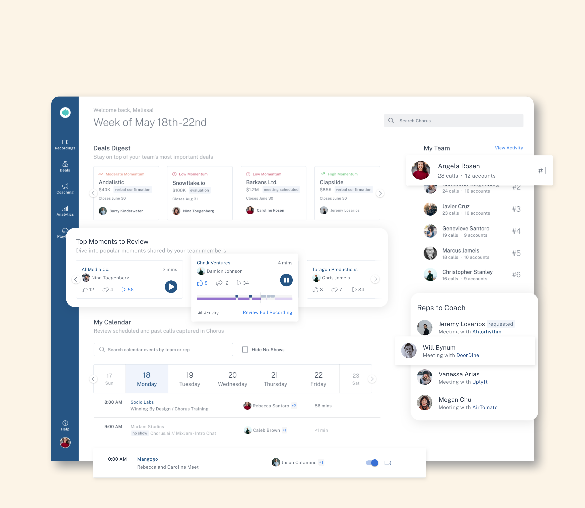
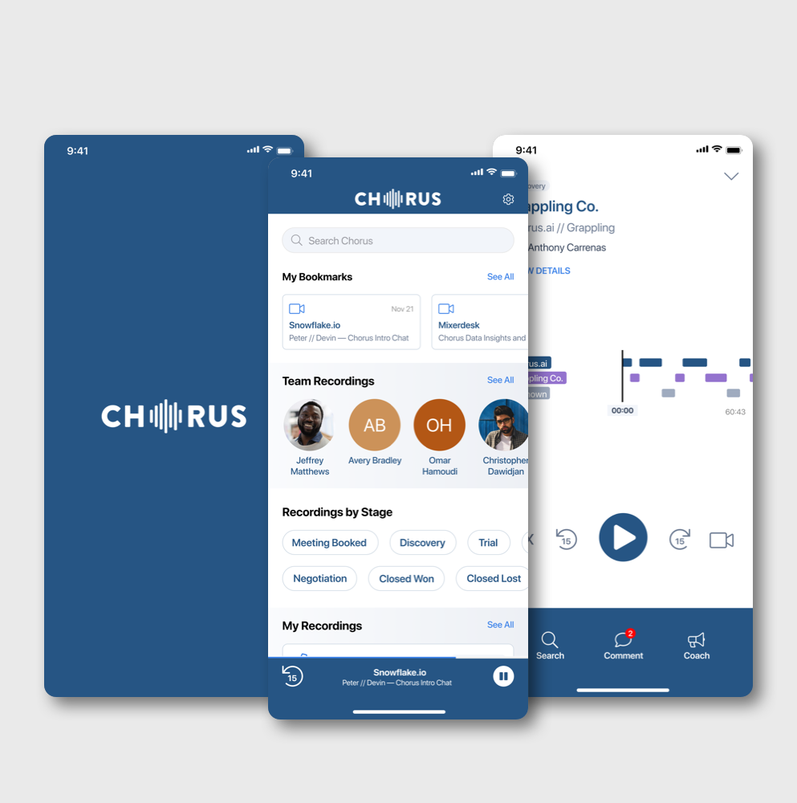
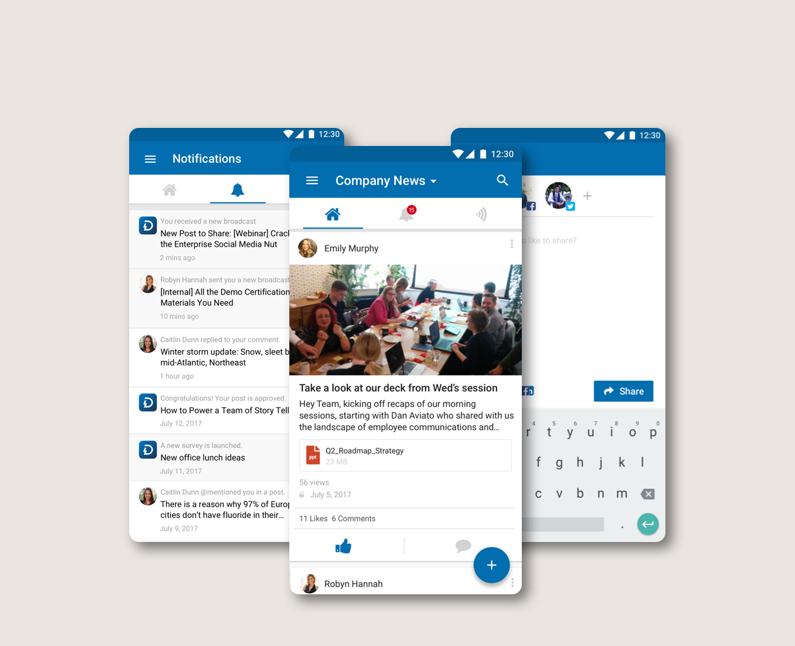
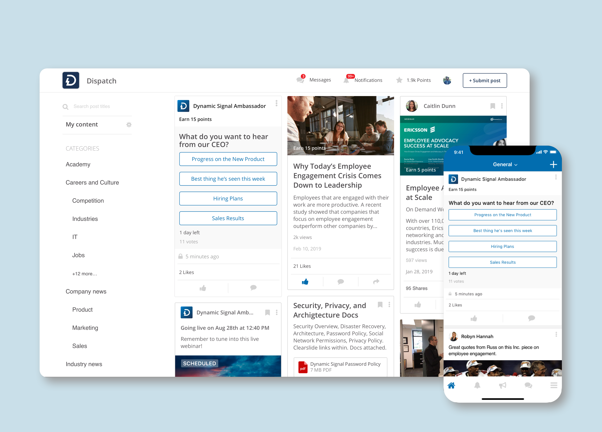
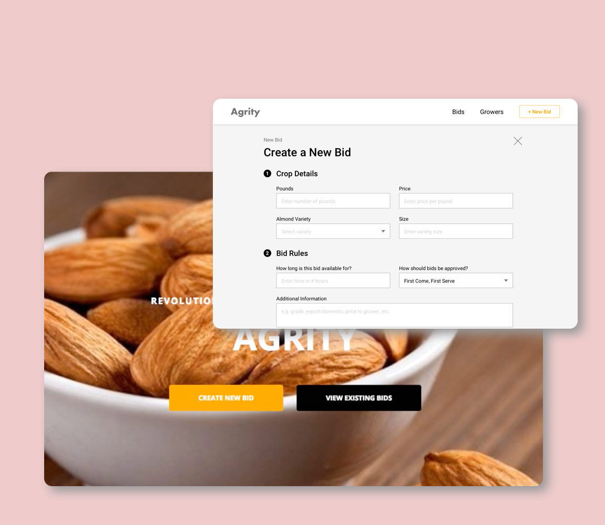

Hi, I'm Fayyaz Mukarram
|
I'm a Product Designer / Photographer / NBA Superfan based in Los Angeles and currently working at Amplitude. My past experience includes design roles at Chorus.ai, Dynamic Signal, LSVP, and Localwise after studying CS and HCI at UC Berkeley.
Scroll to explore my work
Design Philosophy
How I Approach Design
Craft is leadership
I hold a high bar for craft, systems thinking, and clarity — and make that bar visible. Excellence scales when it's modeled, not just requested.
Context over control
Strong teams need context, not micromanagement. I align design to strategy, customer needs, and technical realities so designers can make autonomous decisions.
Clarity creates momentum
Ambiguity slows teams down. I push for sharp problem framing, clear success metrics, and intentional trade-offs. We solve problems, not just ship screens.
Feedback is fuel
Direct, thoughtful feedback accelerates growth. Critique is about the work, never the person. Psychological safety and high standards coexist.
Amplitude
AI First Experimentation
Exploring how AI-first workflows shape product design, research, and delivery — from ideation to shipped experiences.
Amplitude
Session Replay
Understanding real user behavior through replay — turning qualitative signals into product clarity.
Amplitude
Journeys
Mapping paths across the product so teams can see where users succeed, stall, or drop off.

Components · Chorus
Chorus Homepage
Delivering the right content to the right people — clarity in the first impression.
View case study →
Components · Chorus
Chorus iOS Redesign
Meeting prep and call review on-the-go. A mobile experience that keeps sellers in flow.
View case study →Sometimes the best design is the one that gets out of the way.

Components · Dynamic Signal
Dynamic Signal Mobile Redesign
Company news and updates on-the-go. A refresh that put clarity and performance first.
View case study →
Components · Dynamic Signal
Dynamic Signal Quick Polls
Get meaningful feedback from employees. Lightweight input, heavy impact.
View case study →Good defaults + one clear CTA = less friction, more signal.

Components · LSVP
Agrity Bid Tracking Console
Create and manage agricultural bids. Complex workflows, simple mental model.
View case study →